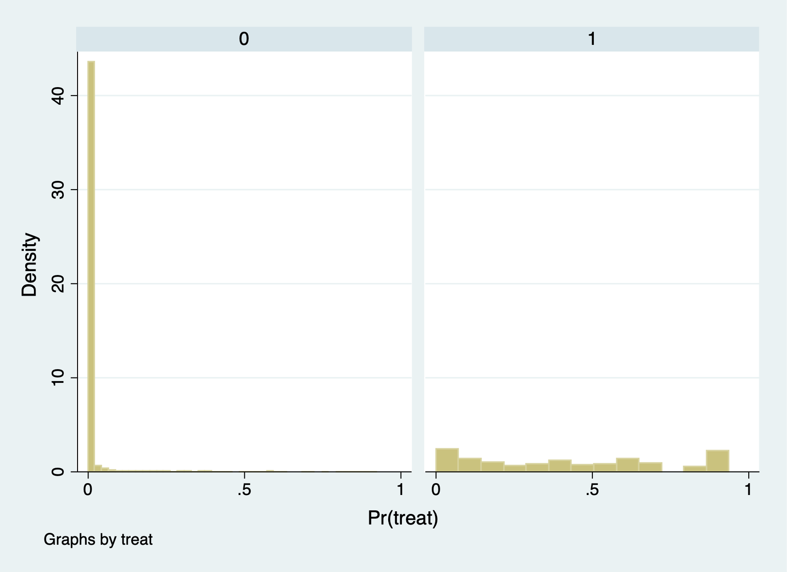

Chapter 2 Inverse Probability Weights
We will reload our treatment group and CPS comparison group, and use the teffects ipw command to estimate the \(ATE\).
We will repull our data, estimate our \(p\)-score, and check our balance
*Get Data
use https://github.com/scunning1975/mixtape/raw/master/nsw_mixtape.dta, clear
drop if treat==0
append using https://github.com/scunning1975/mixtape/raw/master/cps_mixtape.dta
*Calculate Variables
gen agesq=age*age
gen agecube=age*age*age
gen edusq=educ*edu
gen u74 = 0 if re74!=.
replace u74 = 1 if re74==0
gen u75 = 0 if re75!=.
replace u75 = 1 if re75==0
gen interaction1 = educ*re74
gen re74sq=re74^2
gen re75sq=re75^2
gen interaction2 = u74*hisp
*Estimate the coefficients
logit treat age agesq agecube educ edusq marr nodegree black hisp re74 re75 u74 u75 interaction1
predict pscore
* Checking mean propensity scores for treatment and control groups
sum pscore if treat==1, detail
sum pscore if treat==0, detail
* Now look at the propensity score distribution for treatment and control groups
histogram pscore, by(treat) binrescale
2.1 Manual Calculate the \(ATE\)
We will manually calculate inverse probability weighting (IPW) with Propensity Scores. Please note that IPW is not matching, even though we use propensity scores.
IPW with Non-normalized Weights: \[ \widehat{ATE} = \frac{1}{n}*\sum_{n=1}^{N} \left( {\frac{Y_i*D_i}{\hat{p}(x)_i}} \right)-\frac{1}{n}*\sum_{n=1}^{N} \left( {\frac{Y_i*(1-D_i)}{1-\hat{p}(x)_i}} \right) \]
IPW with Normalized Weights:
\[ \widehat{ATE}=\left[\sum_{n=1}^{N}\frac{Y_i*D_i}{\hat{p}(x)_i} \right] / \left[\sum_{n=1}^{N}\frac{D_i}{\hat{p}(x)_i} \right] - \left[\sum_{n=1}^{N}\frac{Y_i*(1-D_i)}{(1-\hat{p}(x)_i)} \right] / \left[\sum_{n=1}^{N}\frac{(1-D_i)}{(1-\hat{p}(x)_i)} \right] \]
2.1.1 Calculate \(E[Y^1]\) and \(E[Y^0]\)
First, we need to calculate normalization weights
Sum the inverse pscore
egen s1=sum(d1)
egen s0=sum(d0)
gen total = _N
egen total_T = sum(treat)
egen total_C = sum(1-treat)First, we will manually calculate \(E[Y^1]\) with non-normalized weights using all the data. Calculate \(E[Y^1]=\frac{1}{n}*\sum_{n=1}^{N}\frac{Y_i*D_i}{\hat{p}(x)_i}\)
Next, we will manually calculate \(E[Y^0]\) with non-normalized weights using all the data. Calculate \(E[Y^0]=\frac{1}{n}*\sum_{n=1}^{N}\frac{Y*(1-D_i)}{(1-\hat{p}(x)_i)}\)
Then calculate the \(ATE\) by taking the difference in \(E[Y^1]-E[Y^0]\).
Variable | Obs Mean Std. Dev. Min Max
-------------+---------------------------------------------------------
ht | 16,177 -11876.79 127578.8 -99232.64 1.19e+07
ht2 | 16,177 -11876.79 0 -11876.79 -11876.79Now we will calculate the \(ATE\) manually using normalized weights
*Way 1
replace y1=(treat*re78/pscore)/(s1/total)
replace y0=((1-treat)*re78/(1-pscore))/(s0/total)
*Way 2
replace y1_3=y1_2/s1
replace y0_3=y0_2/s0
*Get the estimated ATE
gen norm=y1-y0
gen norm2=y1_3-y0_3
*Same Results for ht:ht2 and norm:norm2
sum ht ht2 norm norm2(140 real changes made)
(13,820 real changes made)
(16,177 real changes made)
(16,177 real changes made)
Variable | Obs Mean Std. Dev. Min Max
-------------+---------------------------------------------------------
ht | 16,177 -11876.79 127578.8 -99232.64 1.19e+07
ht2 | 16,177 -11876.79 0 -11876.79 -11876.79
norm | 16,177 -7238.14 332633.6 -99127.2 3.11e+07
norm2 | 16,177 -7238.14 0 -7238.14 -7238.14ATE under non-normalized weights is -$11,876. ATE under normalized weights is -$7,238.
Why are they so much different than the experimental research design estimates? Given that the mean \(1-p(x)\) is close to 1, a lot of weight is given to \(Y^0\). What we need to do is trim and recalculate.
2.1.2 Trim the data
We will drop our calculated variables and then trim our \(p\)-scores.
We will recalculate the non-normalized weights using trimmed data.
gen d1=treat/pscore
gen d0=(1-treat)/(1-pscore)
egen s1=sum(d1)
egen s0=sum(d0)
gen y1=treat*re78/pscore
gen y0=(1-treat)*re78/(1-pscore)
gen ht=y1-y0We will recalculate the normalized weights using trimmed data.
replace y1=(treat*re78/pscore)/(s1/_N)
replace y0=((1-treat)*re78/(1-pscore))/(s0/_N)
gen norm=y1-y0
sum ht norm(0 real changes made)
(0 real changes made)
(0 real changes made)
Variable | Obs Mean Std. Dev. Min Max
-------------+---------------------------------------------------------
ht | 361 2006.365 19656.33 -73545.45 131755.3
norm | 361 1806.73 18967.72 -72480.23 126251.9ATE under non-normalized weights is $2,006, while the estimated ATE under normalized weights is $1,807.
These are much closer to our experimental research design estimates.
2.2 Calculate \(ATE\) and \(ATT\) using teffects
Luckily, we have a built-in Stata command with teffects ipw, so we don’t need to manually calculate the \(ATE\) everytime. (However, it is a good exercise to see how Stata calculate the estimate). The teffects command will also calculate our standard errors, as well.
We will reload our data, trim the data, and use the teffects ipw command. We will also trim our data, since we know that there is a lack of overlap at the tail ends of the estimated \(p\)-scores.
* Reload Data
use https://github.com/scunning1975/mixtape/raw/master/nsw_mixtape.dta, clear
drop if treat==0
*Now merge in the CPS controls from footnote 2 of Table 2 (Dehejia and Wahba 2002)
append using https://github.com/scunning1975/mixtape/raw/master/cps_mixtape.dta
gen agesq=age*age
gen agecube=age*age*age
gen edusq=educ*edu
gen u74 = 0 if re74!=.
replace u74 = 1 if re74==0
gen u75 = 0 if re75!=.
replace u75 = 1 if re75==0
gen interaction1 = educ*re74
gen re74sq=re74^2
gen re75sq=re75^2
gen interaction2 = u74*hisp
* Now estimate the propensity score
logit treat age agesq agecube educ edusq marr nodegree black hisp re74 re75 u74 u75 interaction1
predict pscore
* Checking mean propensity scores for treatment and control groups
sum pscore if treat==1, detail
sum pscore if treat==0, detail
* Trimming the propensity score
drop if pscore <= 0.1
drop if pscore >= 0.9With the teffects command, we need to specify ipw for inverse probability weights and we need to use the option logit to tell Stata to calculate the \(p\)-scores using a logistic regresion. In addition, we will use the option osample to look for any overlap between treatment and comparison. Finally, we will use the option atet to specify that we want to estimate the \(ATT\).
teffects ipw (re78) (treat age agesq agecube educ edusq marr nodegree ///
black hisp re74 re75 u74 u75 interaction1, logit), osample(overlap) atet
capture drop overlapIteration 0: EE criterion = 1.392e-21
Iteration 1: EE criterion = 2.898e-23
Treatment-effects estimation Number of obs = 361
Estimator : inverse-probability weights
Outcome model : weighted mean
Treatment model: logit
------------------------------------------------------------------------------
| Robust
re78 | Coef. Std. Err. z P>|z| [95% Conf. Interval]
-------------+----------------------------------------------------------------
ATET |
treat |
(1 vs 0) | 2646.866 892.2393 2.97 0.003 898.1089 4395.623
-------------+----------------------------------------------------------------
POmean |
treat |
0 | 3791.931 514.4727 7.37 0.000 2783.582 4800.279
------------------------------------------------------------------------------The ATT is estimated at $2,647
Before we calculate the \(ATE\), we need to rescale the dependent variable for concavity of logit. We will do so by dividing re78 by 1000 dollars
The ATE is estimated at $1,611
gen re78_scaled = re78/1000
teffects ipw (re78_scaled) (treat age agesq agecube educ edusq marr nodegree ///
black hisp re74 re75 u74 u75 interaction1, logit), osample(overlap) atecommand quilety is unrecognized
r(199);
r(199);